 FAQNewsBlogPage
FAQNewsBlogPageWe aim to have a positive impact on the world with AI
We want to pave an accessible path forward into what we believe will be the most disrupting field of innovation in the near and distant future. We want to do this by executing the following goals:To develop state-of-the-art software. Partner up with artists in order to do the greatest co-creating projects combining AI with art. To involve as many people as possible in the field of AI.
Who are we?
We are a Dream Team of TU Delft focused on AI. As Team Epoch, we compete in AI competitions all around the world. Our team currently consists of 16 motivated students with different study backgrounds and skills ranging from Computer Science to Technology, Policy and Management. Because of these diverse skill sets, we are confident in our ability to succeed.
Team Epoch competes simultaneously in multiple competitions with different fields such as healthcare, transportation, sports, or business. By having a broad range of topics for the competitions,our team will thrive with well-trained and well-rounded AI engineers by the end of the year.
By enabling students with various backgrounds to compete in AI competitions we aim to actively contribute to democratizing AI. We believe in good AI and that for the future of AI accessibility to AI knowledge is crucial. This not only prevents monopolistic outcomes but also helps to improve the development of AI in the right direction: as a positive and useful solution to societal problems.
What do we do?
The AI competitions that we compete in are in the field of data science. The idea of these competitions is that as long as you have access to a computer and the internet, you can participate. The organizers of the competition usually provide a large dataset and the objective of the challenge.
This is a real-life problem for which most of the time a guideline for the solution already exists, called the 'baseline'. The goal of the competition is to surpass the baseline and build a better-performing model. Team Epoch aims to find new solutions for these competitions by combining already existing methods.
Which competitions we do depends on different aspects like the topic, the organizers, the expected approach, the given dataset, and the scale of the competition. Of course, all of these should be in line with our mission statement.
Built and designed by Team Epoch.
All rights reserved. ©